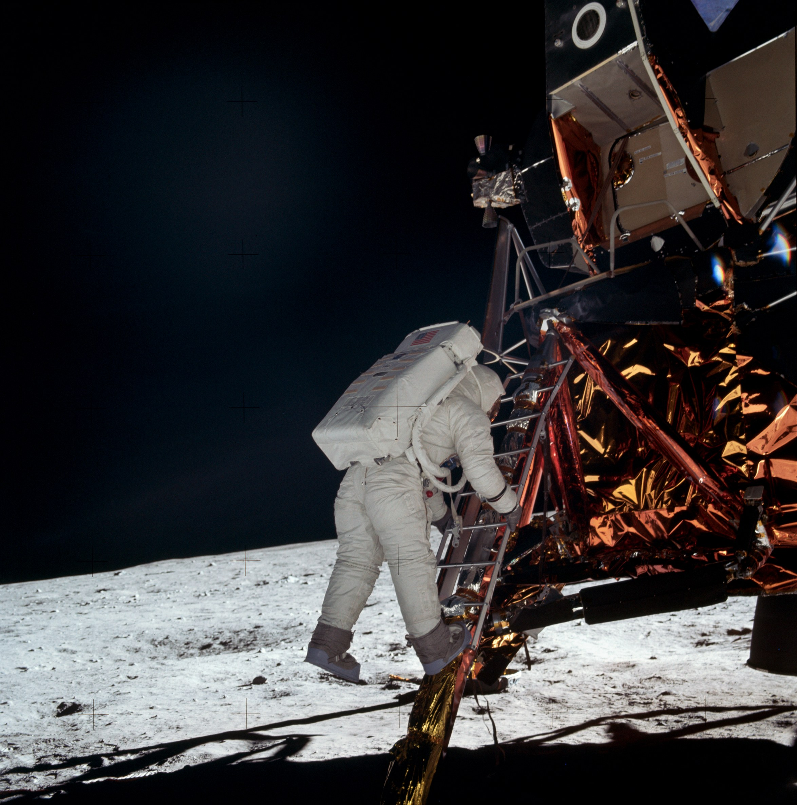
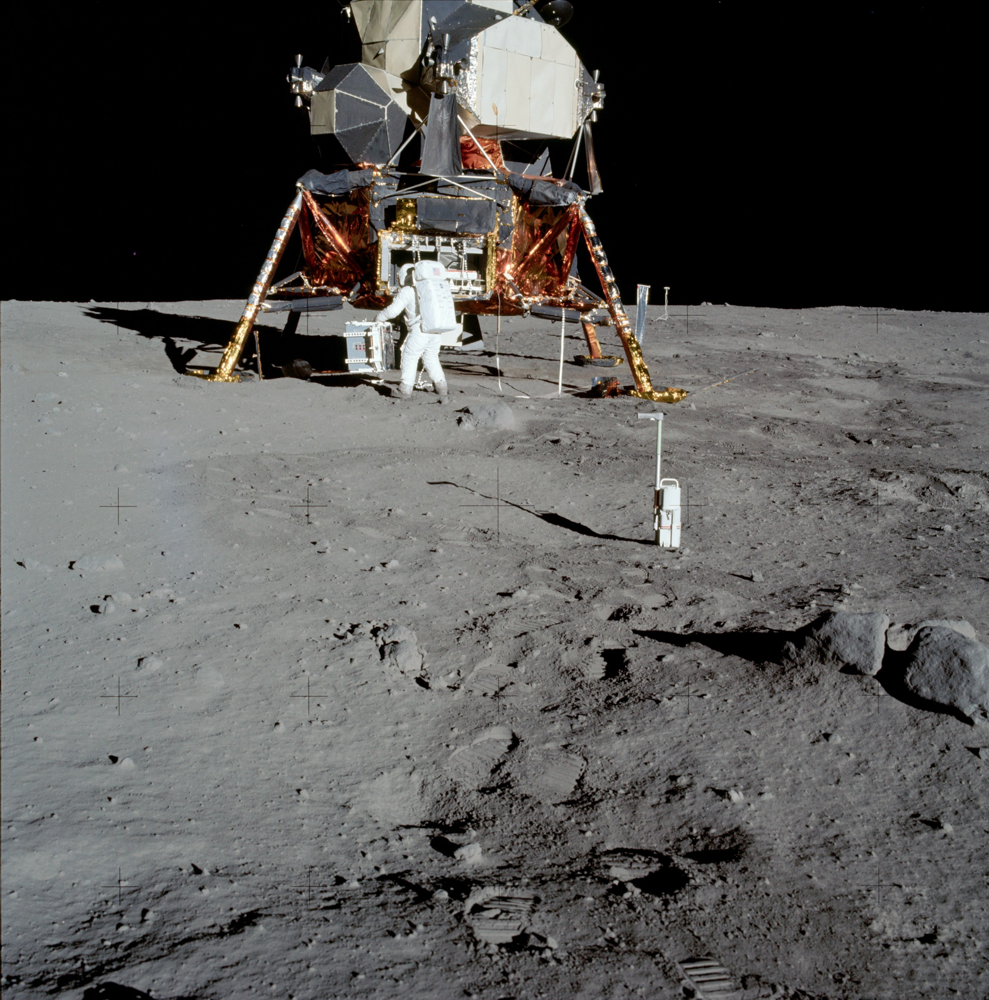

CapCom Charles Duke (Houston): "Good show." Command module pilot Michael Collins (Columbia): "I heard the whole thing." Commander Neil Armstrong (Eagle): "Thank you. Just keep that orbiting base ready for us up there." This three-way conversation was the first of a kind, coming from two ground stations (one on the earth, the other on the moon) and a craft in lunar orbit. When Armstrong stepped out on the surface, he and Aldrin would turn it into a four-way talk, using their backpack radios.
Flight control told lunar launch team Armstrong and Aldrin to begin the two-hour practice countdown. The duo liked working in the one-sixth gravity; it made the tasks seem light. And the checkout went well - the thruster fuel was only ten percent less than they had expected; but a mission timing clock had stopped, displaying a ridiculous figure that they could not correlate to any point in the mission. They tried to turn it back on. When they could not, they left it alone to give the instrument a chance to recover; flight control could keep track of the time in the interim. It soon became apparent that they were going to be able to stay on the moon and explore.
They wondered about their exact location, glancing out the windows and describing what they saw to give flight control and Collins some clues to aid in the search. While waiting to be found, Armstrong relayed all that he could remember about the landing. They knew they were at least six kilometers beyond the target point, although still within the planned ellipse. Colors were almost the same on the surface as from orbit: white, ashen gray, brown, tan, depending on the sun angle. Armstrong noticed that the engine exhaust had apparently fractured some of the nearby boulders. He glanced upward through the rendezvous window and saw the earth looming above them. They also heard via radio some unpleasant sounds from that planet, almost as though someone were moving furniture around in the back room. Flight control quickly silenced the racket, and the checkout on the moon continued.
Because they had adapted so easily to the one-sixth-g environment and because the simulated launch countdown had so few problems, Commander Armstrong decided to begin the extravehicular activity before the scheduled rest period. As Slayton had suspected, the astronauts could not just sit there. They wanted to get out and explore. Flight control agreed, adding that their movements would be watched on prime time television. Rigging up for the stroll took longer than during the training exercises on the earth, not because anything was wrong but because they took extra care to make sure that everything was right. About the only surprise they had was the discovery of a press-to-test button on the portable life support system that neither could identify. But they did not bother flight control about it; their backpack antennas were scraping the cabin ceiling, making communications scratchy, and they had more important things to talk about. They were quite comfortable with the life support systems on their backs, which pleased them after their experiences in the earth's gravity. They did have to move carefully and methodically about the lander, however.
Armstrong takes mankind's first step toward the lunar surface, while millions on earth watch via television.
Finally, it was time to depressurize the cabin, open the hatch, and prepare to step out on the moon. Armstrong was wondering if the light would be good enough for the television camera to capture his first step, and he was thinking about the gymnastics of backing through the hatch and standing on the porch. Forty-five minutes after flight control had given the crew a go for depressurization, the cabin had still not quite reached a zero reading on the gauges, but it was close. The crewmen could not wait any longer; 6 hours and 21 minutes after landing, 20 July, they pulled the hatch open, and Aldrin watched carefully as Armstrong backed out. When he came too close to the sides of the hatch with his bulky backpack, Aldrin gave him detailed instructions - a little to the right, now more to the left - until he had safely reached the porch. Armstrong turned a handle to release the latch on the experiments' compartment and then went down as far as the footpad. He checked to see if he could get back up - that first rung was high. He did not expect any problems, although it would take a pretty good jump. Then the watching world saw what it had been waiting for - Armstrong's first step onto the moon.
"That's one small step for [a]* man, one giant leap for mankind."
With this historic moment behind him, Armstrong began to talk about the surface, about the powdery charcoal-like layers of dust, as he and the television camera looked at his bootprints in the lunar soil. One-sixth g was certainly pleasant, he said. He glanced up at the lunar module cabin, at Aldrin near the window. The lunar module pilot explained to the viewers what Armstrong was doing as he gathered the contingency sample and worked it into the pocket on his suit leg. Armstrong described the stark beauty of the moon, likening the area to the high desert country in the United States.

Aldrin descends the ladder.
When Aldrin asked, "Are you ready for me to come out?" Armstrong answered, "Yes." The commander realized that extravehicular activity on the moon was a two-man job at the minimum. From his position on the ground, he could not give Aldrin as much help in clearing the hatch as he would like, but he did the best he could. On reaching the porch, Aldrin commented on how roomy it was; there was no danger of falling off. "I want to . . . partially close the hatch, . . . making sure not to lock it on my way out." Eighteen minutes and twelve seconds after the first man stepped on the moon, he was joined by his companion. Aldrin also was struck by the "magnificent desolation." Although he could move easily, with no hindrance from the big backpack, he noticed that he did have to think about the position of the mass. Aldrin and Armstrong loped along, tried a kangaroo hop, and reverted to the more conventional mode of simply putting one foot in front of the other.** Despite the ease of movement, both explorers believed that hikes of two kilometers or more would be tiring. On the earth, they had to think only one or two steps ahead; on the moon, they had to work out five to six steps in advance. And the rocky soil was slippery.
In some ways, the astronauts felt frustrated on this first lunar outing; there was so much to see and do and so little time. They had planned some of their moves as they looked out the window before disembarking, but their field of view was limited to 60 percent of the area. This first landing may have been in what was supposedly a nondescript region of the moon, but even here they hoped that the cameras were capturing some of the detail they did not have an opportunity to investigate personally. Not being able to get down on their hands and knees to examine items closely annoyed them; but the powdery soil, its tendency to adhere to their clothing, and the difficulty of regaining upright positions in the bulky space suits dissuaded them from trying to kneel.
Shortly after Aldrin alighted, Armstrong unveiled the plaque on the leg of the LM, described the representation of the earth's two hemispheres, and read the words to a vast listening audience:
Here Man from the planet Earth first set foot upon the Moon, July 1969 A.D. We came in peace for all mankind.
Underneath were the crew members' signatures and the signature of the President of the United States (Nixon).
A little later they held the flag-raising ceremony. The telescoping flagpole stuck and they could not pull it out to its full extent; afraid that they might lose their balance and fall on the rocky surface, they did not try very hard. The ground below the surface was very hard, and they pushed the pole in only 15 to 20 centimeters. Flight control told Collins, circling in the command module above, of the ceremony, remarking that he was probably the only person around without television coverage of the event.
After another brief stint of evaluating their ability to move around, the crewmen were asked to step in front of the camera so the President could speak to them. President Nixon said, "I am talking to you by telephone from the Oval Room at the White House, and this certainly has to be the most historic telephone call ever made." The President said America was proud of them and their feat had made the heavens a part of man's world. Hearing them talk from the moon inspired a redoubling of effort "to bring peace and tranquility to Earth. . . . For one priceless moment in the whole history of man, all the people on this Earth are truly one; one in their pride in what you have done, and one in our prayers that you will return safely to Earth."
All of the ceremonial episodes were short, the President's call was the last, and none used very much of the precious 2 hours and 40 minutes of the schedule.
The astronauts began the scientific part of their mission (see appendix D for experiment descriptions). Getting the science package from its stowage area was easier than in training and, although the kit had been close to the descent engine, no heat damage was observed. Aldrin elected to deploy the experiments manually and looked for level spots in which to set them up. He soon found that it was difficult to decide what was level ground by just looking at the surface. The laser reflector had a leveling device - a bubble, or "BB" - but Aldrin had trouble centering it. He finally gave up and went on to other tasks. Armstrong came over later to photograph the reflector, and the bubble was on dead center. They had no explanation for this. The commander wished he had some kind of a rock table on which to set the packages, to keep them from settling into the lunar soil, but there was no time for that kind of refinement. Aldrin set up the solar array experiment; one panel popped up automatically, but he had to pull on a lanyard with his gloved hand to get the other in place.

Armstrong photographed Aldrin as he deployed scientific experiments at Tranquility Base. In the foreground at right is the 35 mm stereo closeup camera.
Time was getting short, so Aldrin left the experiments and began collecting the documented samples. Reminded by flight control that scientists wanted two core-tube specimens, he pushed the tube about 10 centimeters into the ground and began tapping it with a hammer. When it did not go much farther, he beat on it until the hammer made dents in the top of the tube. Even then he could only get it about five centimeters deeper. He pulled the sampler out of the ground, meeting little resistance. He had an impression of moisture in the soil, because of the way the material adhered to the tube. He tried again about five meters away, but the results were not much better. During the rapping and tapping, the seismic package transmitted the vibrations back to the earth.
Aldrin stands by the passive seismic instrument, with the laser device in front of him. Beyond the U.S. flag is the black and white television camera.
Armstrong had been snapping pictures and filling sample boxes with lunar rocks and surface soil, describing what he was doing as he went from place to place. It took longer to gather the bulk samples than it had during earth simulations. He tried to keep as far from the engine exhaust blast area as he could. He operated the stereoscopic camera developed by scientist Thomas Gold, even though the trigger was difficult to pull with his gloves on. Once he wandered out about 100 meters, being careful not to get out of sight of the lander, to look at a crater and take some pictures. The trip took only a few minutes and was easy, but when he returned he wanted to stop and rest. Then he had to close the sample boxes, which took more effort than he had expected.
After years of questions as to whether the lunar soil would bear the weight of a vehicle without its sinking deep into dust, the footpads of Eagle made only a slight impression.
All during the exercise, the consumables were adequate, and flight control extended the time on the surface by 15 minutes. But, still too soon, CapCom McCandless finally had to tell Aldrin he would have to head back for the cabin in 10 minutes. The lunar module had withstood the landing well. It had apparently been a very soft landing, because the footpads Had sunk only about five centimeters into the soil. The pilots found little wrong with their machine except some broken thermal insulation (the gold foil) on the lander's legs.
After an hour and three-quarters on the surface, Aldrin heard McCandless say, "Head on up the ladder, Buzz." The first step was a long one, and the soil on the soles of his boots made the rungs slippery, but he made it. Using the pulley, the crew hauled the sample boxes and cameras back into the cabin. Armstrong did a deep knee bend and jumped straight up, almost two meters, to the third rung of the ladder. Neither crewman had any trouble getting into the cabin. Once inside, they threw out a number of items that were just taking up space. For the most part, the crew was out of touch with the earth at this time, because the backpack antennas were again scratching against the ceiling. Flight control told Collins that the lunar walkers had returned to their ship, and he shouted, "Hallelujah."

The view from the window - footprints and the flag, left behind on the moon.
Armstrong and Aldrin found the post-EVA check easier than the preparations for getting out, but there was a long checklist to work through. They were glad they had tossed out some of the equipment, because there was still a "truckload" in the cabin. They ate during this period, but made no real attempt to relax, let alone sleep. They knew they could not sleep if all the launch preparations were not finished. They wondered how Collins was faring, racing around upstairs getting ready for the rendezvous.
Once they had finished their chores and were ready to call it a night, flight control began a question-and-answer session on the lunar surface operations. This came after they had already said "good night" twice. When the questions began to require extensive answers, especially on geology, Aldrin asked Houston to postpone the discussion until later. Flight control agreed, and Owen Garriott (now at the capcom console) said he hoped this transmission would be the final good night.
Armstrong and Aldrin found their lunar house dirty, noisy, crowded, and too brightly lit. They put on their helmets to keep from breathing the dust, to muffle the racket, and to protect themselves in any unexpected cabin depressurization. Shutting out the light was not so easy. The shades over the windows were little more than transparent sheets; even the lunar horizon could be seen through them. When Armstrong noticed that the light seemed to be getting stronger, he opened his eyes to find that the earth was pouring its rays through the sextant.
Getting to sleep proved to be a constant battle, and neither pilot was sure that he ever completely dozed off. Aldrin was on the floor, and Armstrong was on the ascent engine cover with his legs in a sling he had rigged up from a tether. Neither was uncomfortable at first - the suits were no problem ("You have your own little snug sleeping bag," Aldrin said) - but soon they began feeling cold. After a time, and much fiddling with the controls, they were warmer, but they told Houston that future moon pilots should adjust the cabin temperature before they started to rest.
While his crewmates had been active on the surface, Collins had been busy in the command module. There was not much navigating to do, so he took pictures and looked out the window, trying to find the lunar module. He never found it; neither did flight control. There was just too much real estate down there to be able to search the whole area properly. Collins divided the part of the moon he was flying over into segments, but he had no better luck. Armstrong and Aldrin had taken the 26-power monocular with them, but Collins did not think it would have helped much, anyway. He did complain that all this searching cut into the time he needed for taking pictures on each circuit, but he was philosophical about it. As he said, "When the LM is on the surface, the command module should act like a good child and be seen and not heard."10
* Whether he actually uttered the article or not later caused considerable discussion. Armstrong, himself, later wrote: "I thought it had been included. Although it is technically possible that the VOX didn't pick it up and transmit it, my listening to the recording indicates it is more likely that it was just omitted."
** Armstrong even tried jumping straight up. When he noticed a tendency to pitch backward, he stopped.
10. "Apollo 11 Debriefing," 1: 10-1, 10-6 through 10-68, 10-72 through 10-82, 11-1 through 11-6; "Apollo 11 Voice," pp. 318-26, 331-36, 341-43, 352, 358-59, 368, 370-98, 400-11, 414, 422-30; Apollo 11 Mission Report," pp. 1-1, 1-2, 3-2, 4-9 through 4-16, 5-7, 5-8, 9-1, 9-19, 9-33, 10-1 through 10-4, 11-1 through 11-5, 12-7; Mission Report: Apollo 11, pp. 2-5; Armstrong to JSC History Off., 3 Dec. 1976; Armstrong to Loyd S. Swenson, 2 Oct. 1975.